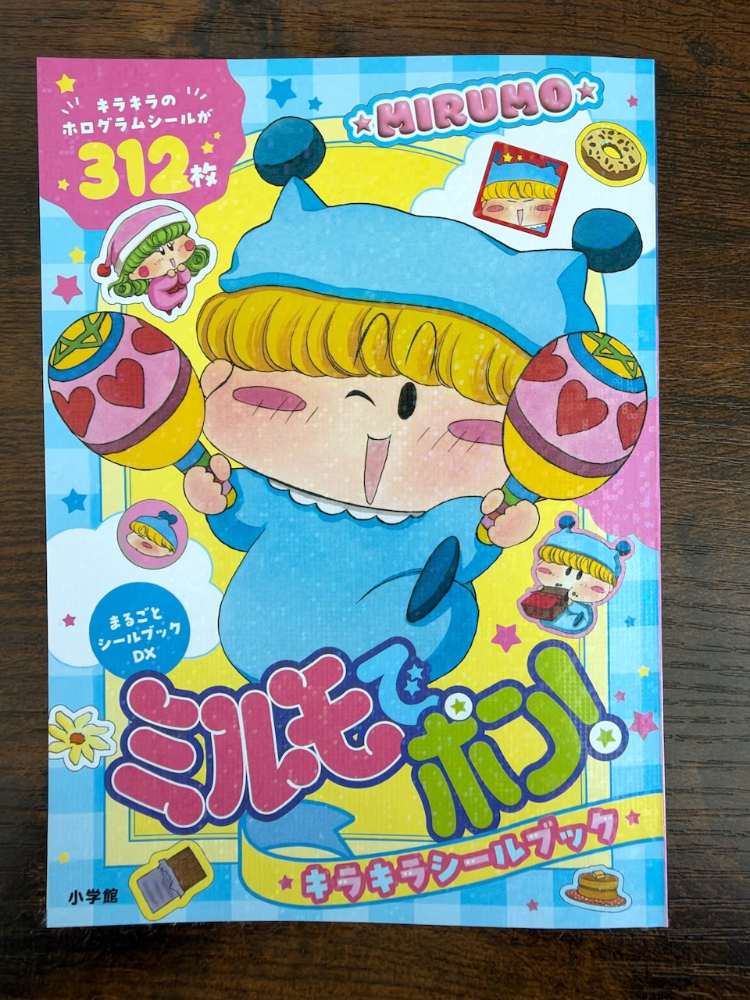
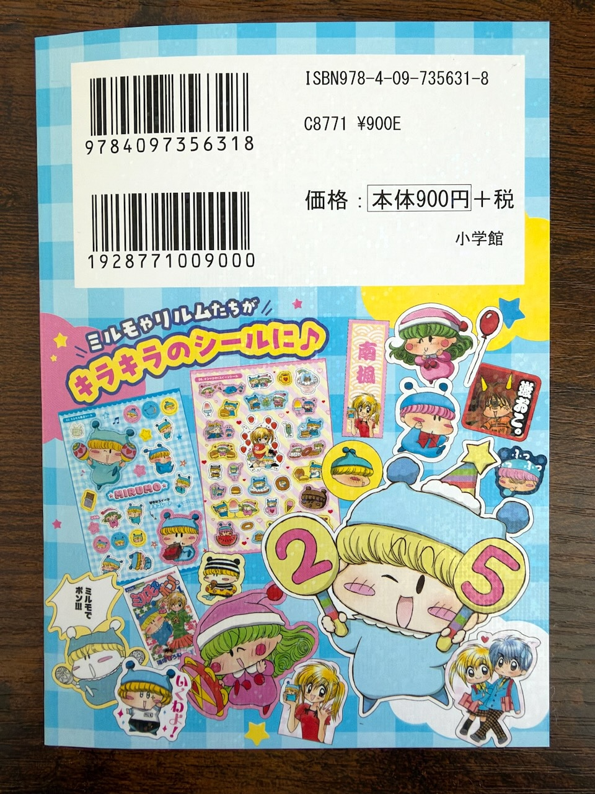
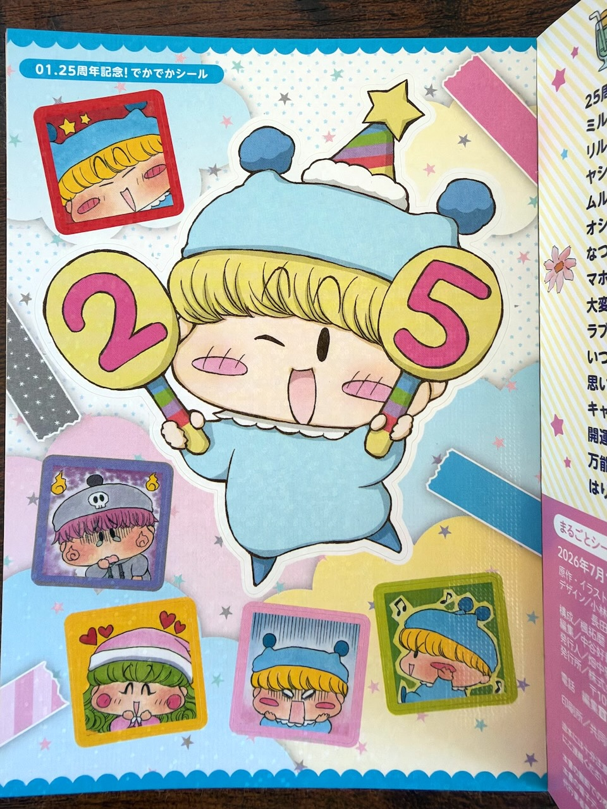
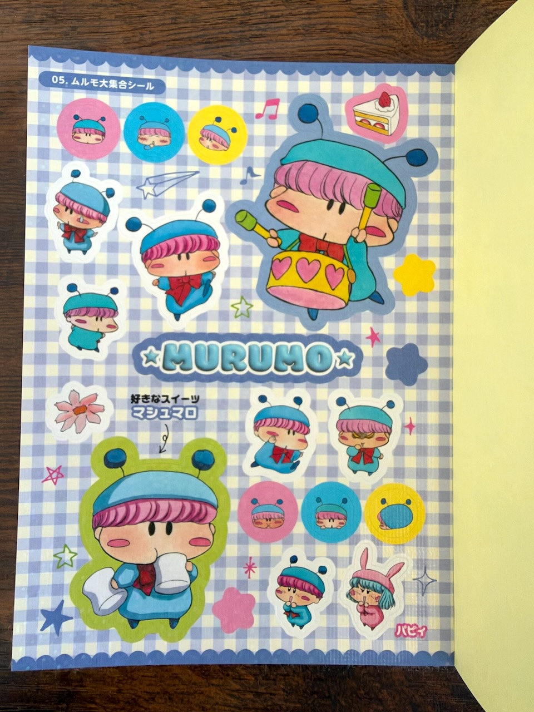
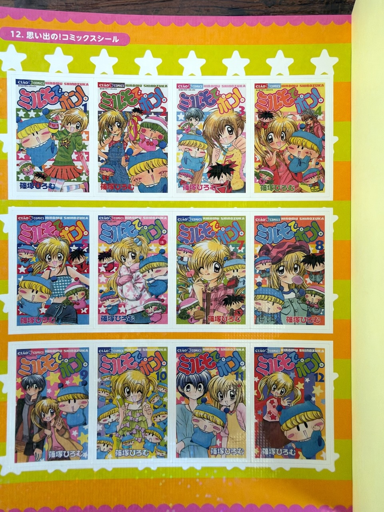
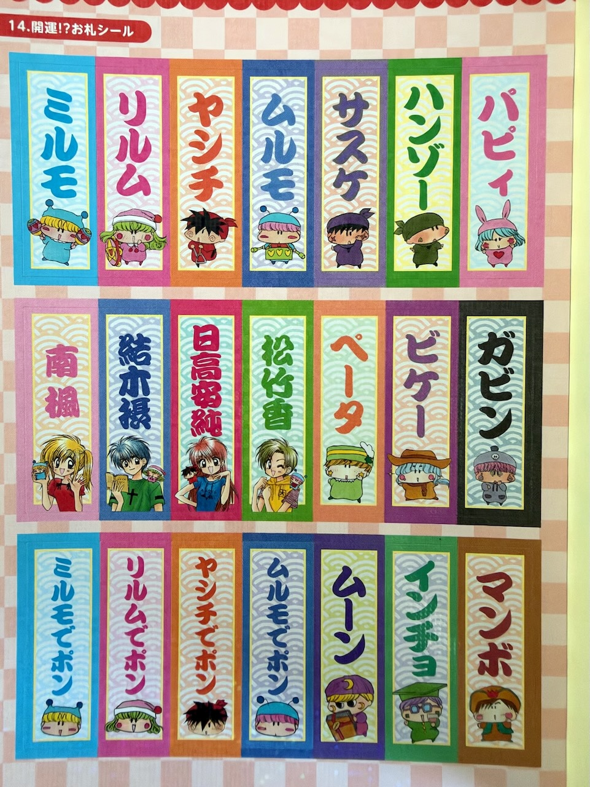
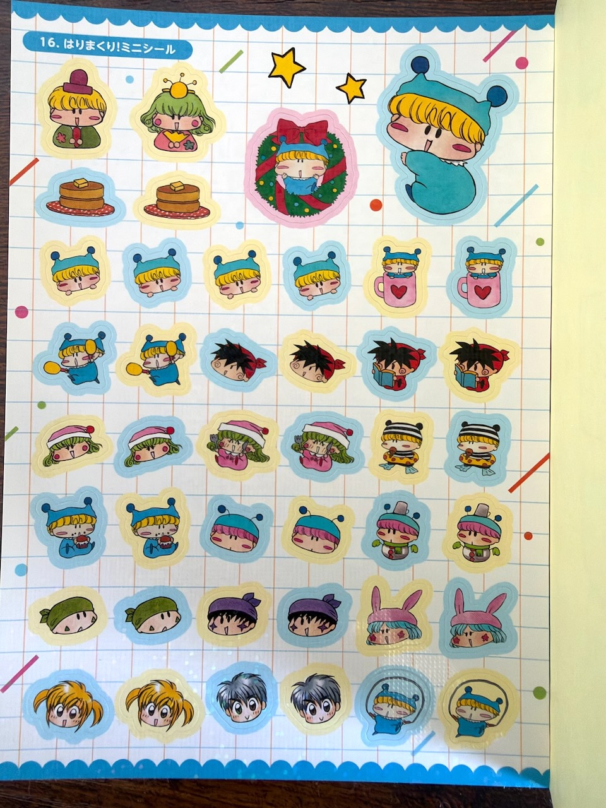
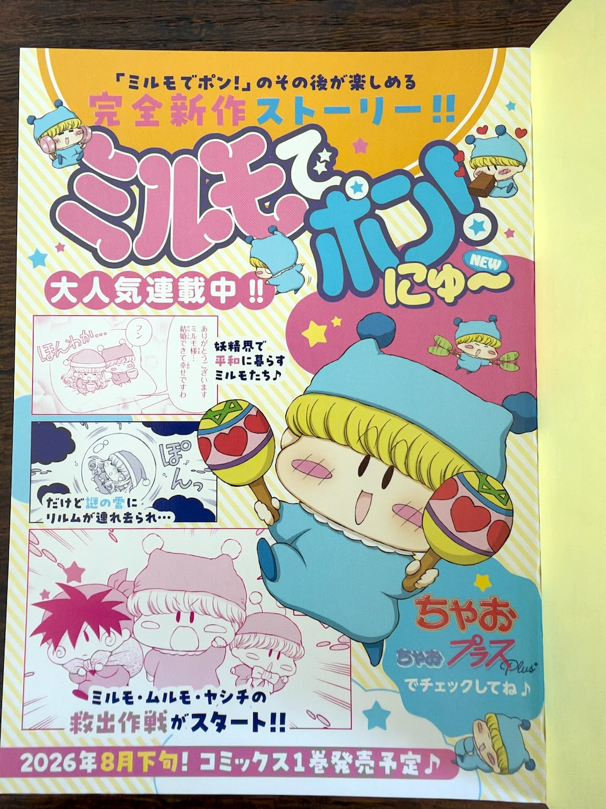

記事に起こすのがだいぶ遅くなってしまいましたが、２０２６年６月２６日に小学館から「ミルモでポン！ キラキラシールブック」が発売されました。
発売されたのはミルモでポン！にゅ〜が連載されていて、世間は第二のミルモブームとして盛り上がっていた時期でもありましたね。
ここではそのシールブックの一部を紹介したいと思います。

まずは表紙です。
コンパクトなA6サイズだけど、表紙からかわいさ全開であちこち持ち歩きたくなります〜。
表紙に書かれている通り、３１２枚すべてのシールがキラキラしています！（表紙もキラキラ仕様！）

裏表紙もにぎやかでかわいい！
でっかいミルモは、最近描かれた２５周年版のミルモですね。
他のシールは過去のコミックス等からの出典ですが、２５年前の絵柄が今も使われ続けているのがすごいです（２５年も経つと全然違う絵柄に変わる先生も多いですし）

中はオールカラーになっています（シール帳なので当たり前^^;）
１ページ目はミルモ２５周年！でかでかシールで、ミルモのそばになぜかガビンが！？

最初の方は主役キャラごとに１ページ分、たくさんのシールが並びます。

コミックス全１２巻の表紙もシール化されています。
今はこんなに小さく＆解像度高く印刷できるのか〜と印刷技術の向上を感じました。

個人的にはこのお札シールが一番のお気に入り！
このシールだけでも１０枚くらいほしいっ。

最後のシールはミニシールがずらっと。
左上の帽子をかぶっていないミルモとリルムに大注目！(^^)
ミルモたち妖精は帽子の中を見せたがらないので、このシールはかなり初期の頃に描かれたミルモとリルムなのかな？
このシールも含め、いろいろとお絵描きの参考にもなりそうなシールがたくさんありました。

そして最終ページはミルモでポン！にゅ〜のコミックス１巻の発売告知が！！
コミックス発売のニュースはシールブックのこの告知で知りましたっけ。
にゅ〜は全５話なのに「コミックス１巻」と書かれていてどういうこと！？とミルモファンは大騒ぎ・・（その後、にゅ〜のセカンドシーズン連載が発表されました）
(2026/11/21)